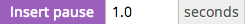
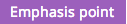

f to open the music browser. to filter by the song's nearest timbral neighbors. Press the
to filter by the song's nearest timbral neighbors. Press the x in the red box to clear this filter.Add Song button in the local music library.The content-based audio editor allows users to edit audio stories that take advantage of the content of speech and music.
Go to http://voicebox.eecs.berkeley.edu/speecheditor/?speech=bluesmobile-interview to load a short clip from an interview between Ben Manilla and Bettye Lavette.
enter or click to render the current timeline.space bar or click to play the current timeline. This will (usually) force a re-render if necessary, but it's occasionally buggy so I'd recommend rendering first (enter). to insert a pause/breath to split up a sentence.insert pause button - r. You can copy, paste, delete in here and from here too.e or  to add an emphasis point after the current word. The current word is selected based on the cursor position in the text boxes.f to open the music browser. to filter by the song's nearest timbral neighbors. Press the x in the red box to clear this filter.Add Song button in the local music library.x in the top-right corner of the track.u or click on an emphasis point in the timeline ( ) to open the underlay creation dialog.
) to open the underlay creation dialog.
Create (this will be very fast for a single emphasis point; it will be quadratic in the length of the song for multiple change points)w and s move the cursor up and down between paragraphs in the text boxes.Music Volume button allows for global adjustments to the music. This is a hack, but can be useful when generated underlays are too loud or too soft. to start a new composition with one of the other speech tracks.
to start a new composition with one of the other speech tracks.Clear words button clears all of the words from the timeline/transcript view. Sometimes it's nice to start fresh. If you do this, it's sometimes tricky to see where you can paste words; one of the two columns of the transcript view will still contain a text box! Hover right beneath the speaker names until you see the cursor change, then click and paste.